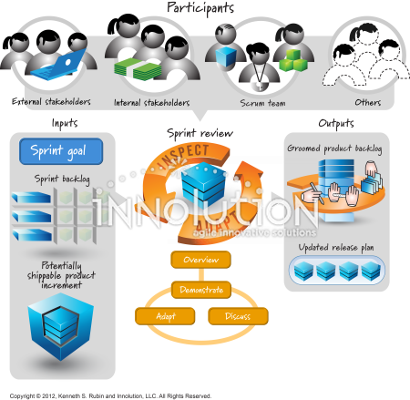

The Sprint Review is an informal meeting held at the end of a Sprint to inspect the outcome of the Sprint and determine future adaptations. During this event, the Scrum Team presents the results of their work to key stakeholders, showcasing the new features or increments of the product that have achieved the "Definition of Done." It is not just a presentation, but a collaborative working session to gather actionable feedback from the people who will actually use or sponsor the product.

For example, if a team just finished building a new user checkout process for an e-commerce application, they would have stakeholders physically click through the new process during the review. If a stakeholder notes that a button is hard to find or the flow is confusing, that feedback is captured and turned into a new Product Backlog Item for a future sprint. The ultimate output of the Sprint Review is an updated and revised Product Backlog ready for the next Sprint Planning session.